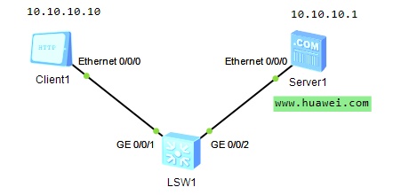
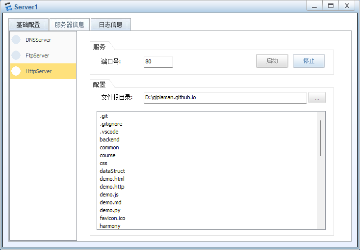
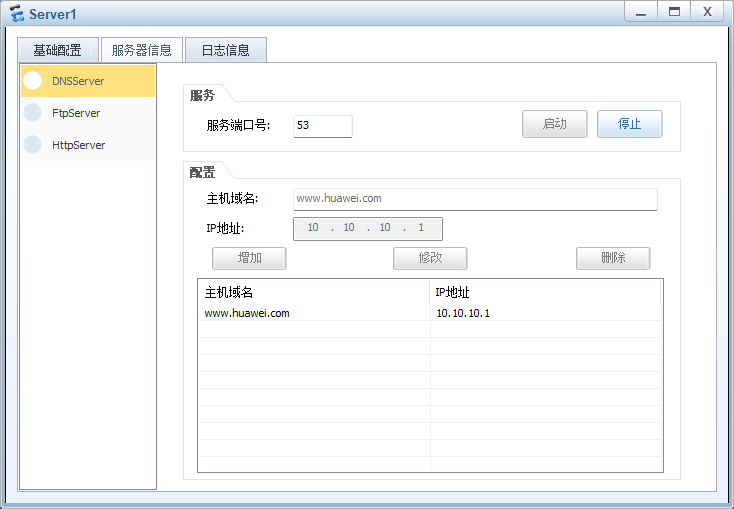
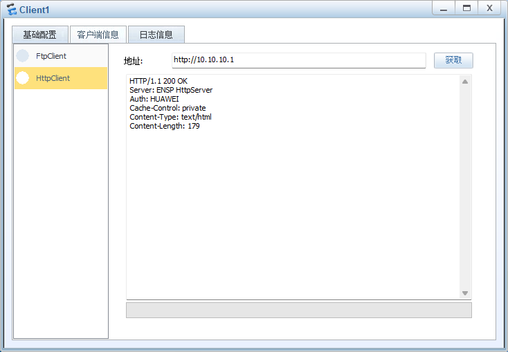
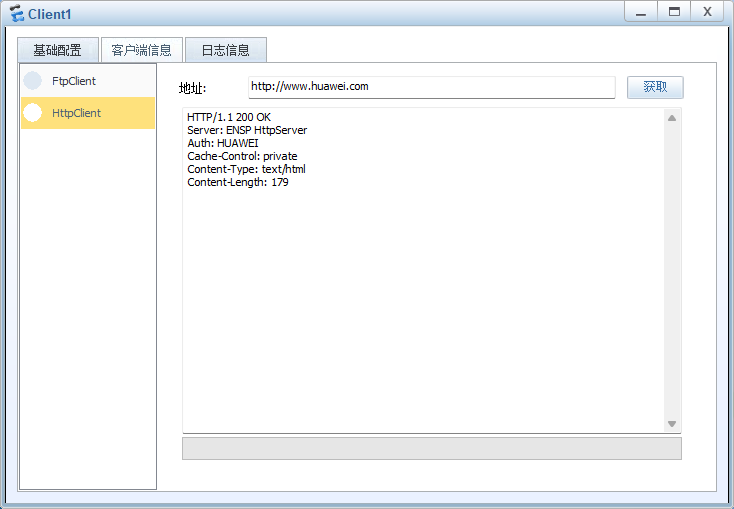

计算机网络实验
Network
- 实验内容
- 服务器综合运用 Server
- 实验目的
- 实验学时
- 2
- 实验类型
- 验证型
- 实验器材
- eNSP 网络模拟平台
- 一个客户端 Client
- 一个服务器 Server
- 一台交换机 S5700
- 前置知识
- 实验步骤
- 创建拓扑

创建拓扑
- 配置IP地址
- Server 配置 HttpServer 服务器

Server 配置 HttpServer 服务器
- Server 配置 DNSServer 服务器

Server 配置 DNSServer 服务器
- Client 使用 IP 地址访问 HttpServer 服务器

Client 使用 IP 地址访问 HttpServer 服务器
- 使用 Wireshark 查看 IP 地址访问过程
- Client 使用域名访问 HttpServer 服务器

Client 使用域名访问 HttpServer 服务器
- 使用 Wireshark 查看 域名 地址访问过程
- 拓展练习
- 配置 FTP服务器并访问
- Server_PT
- 实验分析
- 实验总结
- 附录